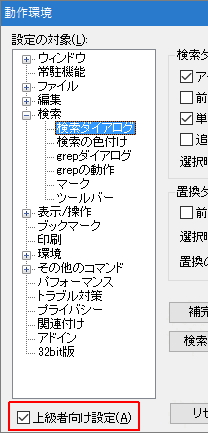
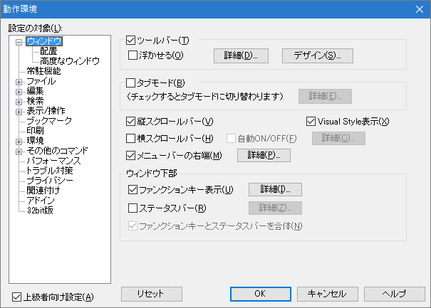
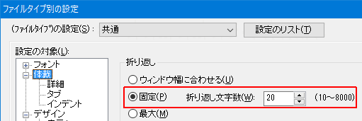
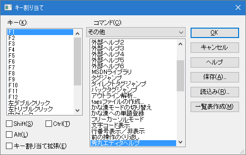

【０】ここに書いてあること
【１】カスタマイズ一覧
【２】画面まわり
【３】ユーザーインターフェース
【４】行の扱い
【５】拡張子別の設定
【６】キー操作
【７】マクロ
【８】最後に
ここでは、秀丸エディタをインストールした後で特別な設定をしないまま使っていて、 いまいちしっくりこないという方や、「こんなことは出来ないのかな」とか思っている方を対象に、 秀丸エディタをもっともっと使いやすくする方法（カスタマイズ）を説明します。
カスタマイズ以外にも、便利な機能なども紹介していますので、自分は、カスタマイズ方法を知っているので、 いまさらそんな説明は不要だと思われている方も、最後まで目を通して頂けたらと思います。 「おおっ、そんなことが出来るのか」と思うことがあるかもしれません。
秀丸エディタで設定出来る内容の一覧表（詳細な説明は、秀丸エディタのヘルプを参照）です。
ここだけは押さえておいた方が良いと思うものと、一覧表以外のカスタマイズについては、別のところで順に説明しています。
動作環境を操作する場合は「上級者向け設定」をチェックしておいてください。

「その他→ファイルタイプ別の設定→フォント」
文字フォントやサイズなどを設定。
「その他→ファイルタイプ別の設定→体裁」
折り返し、行番号の計算方法、行間、文字間、自動インデント、タブの文字数などの設定。
「その他→ファイルタイプ別の設定→デザイン」
各種強調表示、複数行コメント、ルーラー、行番号、カーソル行、文字色の設定。
「その他→ファイルタイプ別の設定→その他」
かな漢字変換の制御、保存する時に不要なタブや空白を変換、ＥＯＦ制御文字の扱い、エンコード、改行BOM、バックアップファイルの設定。
「その他→動作環境→ウィンドウ」
ツールバー表示、ファンクションキー表示、スクロールバー表示、タブモードなど、ウィンドウ関連を設定。
「その他→動作環境→表示/操作」
画面のスクロール方法、カーソル移動の加速、カーソル形状など、カーソル関連を設定。
「その他→動作環境→環境」
マクロファイル用、設定ファイル用のフォルダなど、パス関連を設定。
Windows Vista以降のOSでは、必ず書き込み可能なフォルダを指定してください。 (デフォルトでユーザーフォルダ以下に設定されるので、通常は問題ない。)
「その他→動作環境→パフォーマンス」
やり直しバッファサイズ、テンポラリファイルの利用方法など、編集時の制御関連を設定。
「その他→動作環境→ファイル」
ファイルを開く時のダイアログタイプ、ファイルのヒストリー個数、ファイルの自動保存方法、ファイルの排他制御方法などを設定。
「その他→動作環境→編集」
禁則処理の方法、禁則対象文字など、禁則処理を設定。
まずは、画面まわり（見た目）を自分好みに変えてみましょう。
「その他→ファイルタイプ別の設定→デザイン」場所の一覧にある各項目の「文字の色」などを好きな色に変えて下さい。 （各項目を選択し、プロパティから変更してください）
「カーソル行」と「普通の文字」は、別の色にしておいた方がいいでしょう。
カーソル行には「下線」を付けることも出来ます。
自分の気に入った設定になるまで２．〜３．を繰り返して下さい。
どうです。かなり見やすくなっていませんか。
これだけでもかまいませんが、マウスを使うか使わないか等で設定しておいた方がいい項目がありますので、 そちらの設定もしてみましょう。
「その他→動作環境→ウィンドウ」「ツールバー」、「縦スクロールバー」、「横スクロールバー」、 「ファンクションキー表示」、「ステータスバー」、「タブモード」をお好みに応じてＯＮにしたり、ＯＦＦにしたりして下さい。
意味が分からない場合は、とりあえず逆の設定（ＯＮの時はＯＦＦ、ＯＦＦの時はＯＮ）にして下さい。
「詳細」ボタンがある場合は、その内容も確認してみてください。 ステータスバーの場合は、全体の文字数や、行数も表示する事も可能です。

自分の気に入った設定になるまで１．〜２．を繰り返して下さい。
たったこれだけの設定でも、インストール時の設定と比べて使いやすくなったと思います。 このように、秀丸エディタはユーザーごとにカスタマイズ出来るすばらしいエディタなのです。
秀丸エディタでのインターフェース（ユーザーとの間をとりもつ部分）と言えば、何といってもファイルを扱うことに尽きると思いますが、 ここでは、そのインターフェースを変更したり、便利な機能を紹介します。
まずは、よく使う「ファイル→開く」のダイアログを自分好みに変えてみましょう。 （１アクションで「開く」のダイアログを出す方法もありますので、「【６】キー操作」を参照して下さい）

最近使ったファイルは、「ファイル→[1]」などで、開くことが出来ますが、 デフォルトの設定（３つ）では少なすぎて足りないという方や、ヒストリーなんて不要だという方がいると思います。 そういう時は、「０〜２０」の範囲で自由に変えることが出来ます。

１１個以上にして、１１個目以降をキーボードで選択したい場合は、[↑]か[↓]で選択するか、再度[0]を押すことで次の候補へ移動することが出来ます。
いつもよく使う拡張子が決まっている（例えば、「TXT」）ので、 最初に「開く」のダイアログが出た時に「TXT」のファイルだけが表示されたら便利だと思ったことはありませんか？
複数の拡張子を指定したい場合（例えば、「TXT」と「DOC」）は、「;」(半角のセミコロン)で区切って （例えば、「*.TXT;*.DOC」）指定することが出来ます。
タスクトレイにある秀丸をクリックした時に出る「フォルダ」と同じものが「開く」のダイアログにあったら便利だと思ったことはありませんか。 「開く」のダイアログで、[Alt]+[Space]を押せば、最近アクセスしたフォルダリストを出すことが出来ます。
これで、必要なファイルを容易に開くことが出来るようになったと思います。
文章を書く人にとって、行の扱い（改行が入ることで１行にするか、見た目で１行にする。１ページの行数を指定。）というものは、 非常に重要になってくると思いますが、今の設定で満足していますか。ここでは、行の扱いを変更したり、便利な機能を紹介します。
これ以降は、改行（※）が入ることで１行にすることを「エディタ行」、見た目で１行にすることを「ワープロ行」、 行の開始から改行までを「１行」として説明します。
（※）編注：ここでの「改行」とは、見た目の折り返しのことではなく、画面上で"↓"と表示されている「改行記号」のことを指しています。
まずは、「エディタ行」と「ワープロ行」を理解するために、次の設定をして下さい。
「その他→ファイルタイプ別の設定→体裁」の「折り返し文字数」で固定を選び、「２０」にして下さい。

「行番号表示」をＯＮにして下さい。 （ＯＦＦのままでも、秀丸エディタウィンドウの右上に行番号が出ます）

「その他→ファイルタイプ別の設定→体裁→詳細」にある「行番号の計算方法」を「ワープロ的」にして下さい。

「ＯＫ」を押してダイアログを閉じて下さい。 （これで、「ワープロ的」での行番号の計算方法が分かります）

同様に、「行番号の計算方法」を「エディタ的」にして「エディタ行」の行番号の計算方法も確認して下さい。
これで、「エディタ行」と「ワープロ行」が理解出来たと思いますので、自分にあった設定に変更しておきましょう。
原稿などを書く時は、１ページはワープロ行で１００行にしたいといったようなことがあると思いますが、 そういう時は、「ページ番号表示」をありにしておくといいでしょう。
「その他→ファイルタイプ別の設定→デザイン→表示」の「ページ番号表示」をＯＮにして下さい。

「ＯＫ」を押してダイアログを閉じて下さい。
ここまで読まれた方の中には、 「おいおい、ちょっと待ってくれー。わしは、原稿も書くし（例えば、拡張子は「TXT」） プログラム（例えば、拡張子は「Ｃ」）もするのでファイルを開くたびにそんな設定をしないといけないのか？」 と思う方もいると思いますが、ご安心を。 拡張子ごとに個別の設定をすることも可能なので、「【５】拡張子別の設定」を参照して下さい。
文章を編集中に人から声をかけられて編集作業を一時中断した後で、 「あれっ、今まで何を編集したんだっけ。編集した行に移動出来れば思い出せるんだけどなー」と思ったことはありませんか。 そういう人のために、編集位置を検索するという機能がありますので、「●編集位置のマーク及び検索」を参照して下さい。
ここまでは、カスタマイズとは言えないくらいの簡単な設定です。これ以降に、カスタマイズの本領を発揮する部分が書かれています。
目的に応じて（例えば、「文章ファイル」、「プログラムファイル」）書式を変更したいと思ったことはありませんか。 ここでは、拡張子別に書式を設定する方法を紹介します。
では、文章ファイルの拡張子を「TXT」、プログラムファイルの拡張子を「C」として、それぞれの書式を設定してみましょう。

「.TXTの設定」コンボボックスから「テキストファイル」を選んで下さい。
（これで、拡張子が「TXT」のファイルは個別の設定を利用することが出来るようになります）

（「設定のリスト」ボタンを押すことで、新たな設定を作ったり既にある設定をコピーしたりすることも出来ます。 既に「共通」の設定をカスタマイズしている場合は、「共通」の設定をコピーするといいでしょう）

同様に、プログラムファイル（拡張子が「C」）も設定して下さい。
試しに「文章ファイル」、「プログラムファイル」、「それ以外のファイル」を開いてみて下さい。先ほど設定した内容が反映されているはずです。
これで、目的に応じたファイルが作りやすくなったと思います。
エディタを使うのは初めてで、どのキーに何が割り当てられているかさっぱり分からないといったことはありませんか。
また、別のエディタから秀丸エディタに変更した場合など、キーの操作が以前のエディタと違っていたり、 以前のエディタでは出来ていたのに秀丸エディタでは操作出来ない（分からない）といったことはありませんか。
ここでは、自分の好きなキー（マウスを含む）に必要な機能を割り当てる方法や、便利な機能を紹介します。
まずは、どのキーにどういった機能が割り当てられているか確認してみましょう。
「その他→キー割り当て」ダイアログの「一覧表作成」ボタンを押して下さい。
（確認のダイアログが出ます）

「KEY.TXT」ファイルを開いて下さい。
（キーに割り当てられている機能が分かります）
「KEY.TXT」ファイルの最後に定義されている「メニュー」というのを見て、 「これって、１つのキーに複数の機能をメニュー形式で出すことが出来るってことなの？」 と思われた方がいると思いますが、その通りです。 よく似た機能（例えば、ファイル操作）をひとまとめ（メニュー）にしておいて、それを１つのキーで呼び出すことが可能です。
メニューについて説明する前に、通常のキー割り当て（１つのキーに１つの機能）方法を説明したいと思います。
先ほど説明したメニューを作ってみましょう。
「その他→メニュー編集」ダイアログボックスを表示し、「ユーザーメニュー」タブを選択してください。


「閉じる」ボタンを押して下さい。
（これで完了です）
メニューをキーに割り当てる場合は、通常のキー割り当てと同様な方法で可能です。
（「キー割り当て」ダイアログの「コマンド」コンボボックスに「メニュー/マクロ」、 「コマンド」リストボックスの「メニュー１〜８」を選択して下さい）
「メニュー８」は、「メニュー編集」ダイアログで、メニュー８を選択した場合のみ表示される、 「ESCキーに割当て」をＯＮにすることで、[Esc]に割り当てることも可能です。 但し、[Esc]を押してもメニューは表示されません。また、0.5秒以内に割り当てたキーを押す必要があります。
ここまで読んでいて、 「げっ、複数のマシンを同じ設定にしたい場合は、１台ごとに同じ設定をしないといけないの？」 と思われた方がいると思いますが、ご安心を。最初の１台だけ設定すれば他のマシンは簡単に設定することが出来ます。
他のマシンを同じキー割り当てにするための準備作業として、キー割り当て用のファイルを作りましょう。
他のマシンも同じキー割り当てに設定しましょう。
※設定の移行手順の詳細については、[HME0078A] ●各種設定を移行するためファイルに保存したい、[HME0078B] ●設定を他のマシンに移行したい を参照してください。
「キー割り当て」にない機能や、ある特定の操作をしたい（文章の最後に自分の名前と今日の日付を挿入など）場合などに 「マクロ」を使うようになります。
「マクロ」とは、Ｃ言語によく似たプログラムの一種です。作成したマクロも通常の機能と同様に「キー割り当て」することが可能です。
この「マクロ」を使えるようになることで今まで時間がかかっていた編集作業等が簡単に出来るようになりますので、是非マスターして下さい。
秀丸エディタで最終的にたどりつく究極のカスタマイズ方法が、「マクロ」です。
詳細な説明は、「第III部〜秀丸マクロのいろはにほへと」を参照して下さい。 （サンプルマクロ、マクロの登録方法、マクロの実行方法と必要なことは全て書かれています）
ここまでに書いたことは、秀丸エディタのカスタマイズのおおざっぱな説明です。
秀丸エディタの設定（特に「その他→ファイルタイプ別の設定」、「その他→動作環境」）にはその他にもいろいろ便利な機能がありますので、 一通り目を通しておいて下さい。きっと新たな発見があるでしょう。 また、標準で装備されていない機能でも、マクロを利用することで実現できるものもあります。 （マクロについては、「第III部〜秀丸マクロのいろはにほへと」を参照して下さい）
自分ではマクロを組めない場合は、 コミュニテックスの秀シリーズサポートフォーラムの「秀丸エディタマクロ作者会議室」で質問すれば、 何らかのヒントや回答が得られる場合もあります。 秀まるおのホームページ(サイトー企画)>ライブラリに秀丸エディタ用のマクロがたくさん登録されていますので、 それらを利用するという方法もあります。